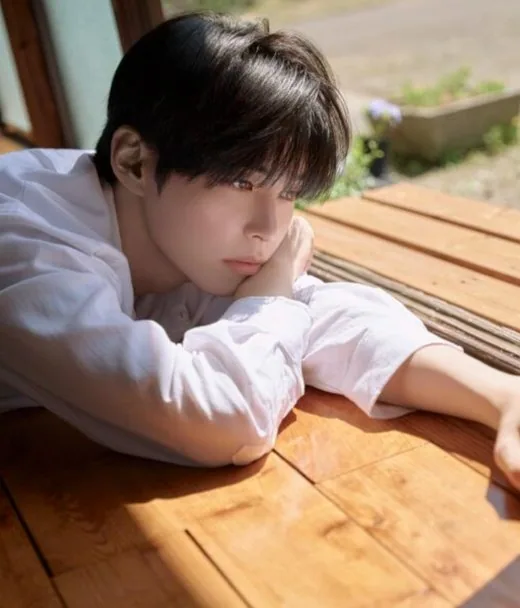
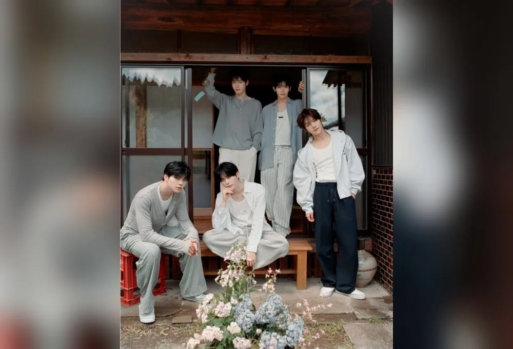
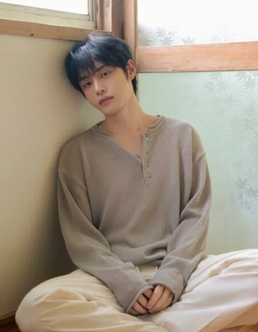
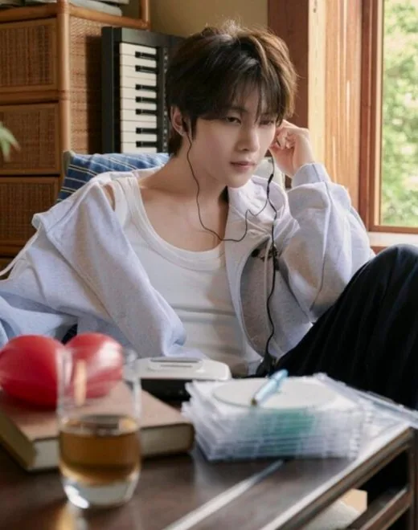
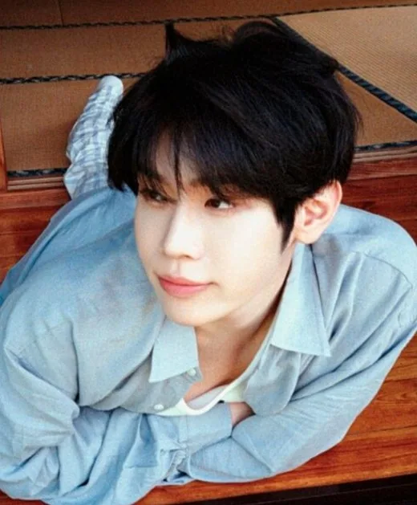
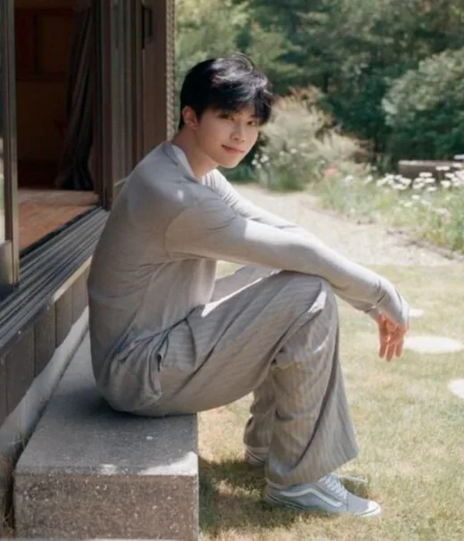
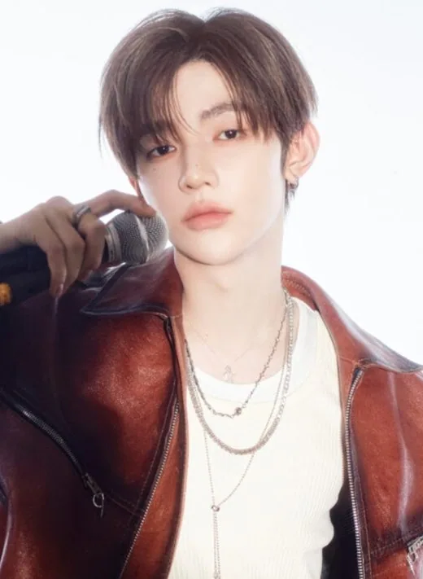
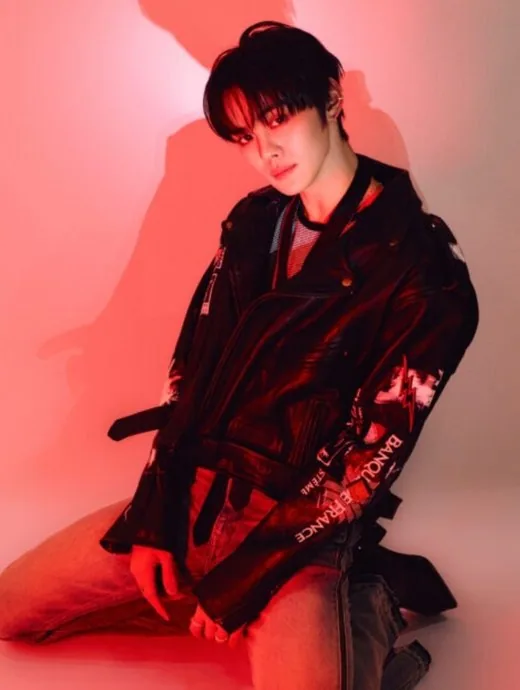

Han-bin
Han-bin (한빈) · Leader · Coréen

K-POP
Découvre ZEROBASEONE et les profils de ses membres sur IBASE Asian Pop.
Ouvrir la fiche interactiveHistoire : ZEROBASEONE (제로베이스원, ZB1) est un boys group sud-coréen formé par l'émission Boys Planet de Mnet en 2023 et géré par WakeOne. Il a débuté le 10 juillet 2023 avec l'EP « Youth in the Shade », premier album de débuts de K-pop à dépasser les 2 millions d'exemplaires. Composé à l'origine de 9 membres, il continue à 5 (Han-bin, Ji-woong, Matthew, Tae-rae et Gun-wook) depuis mars 2026 : Zhang Hao, Ricky, Gyu-vin et Yu-jin l'ont quitté à la fin de leur contrat, après le concert final de la tournée « Here & Now ». Leurs fans s'appellent ZEROSE. Sources : Wikipedia, Kpopping.
Débuts : 10 juillet 2023 (EP « Youth in the Shade »)
Agence : WakeOne (Lapone / Sony Music Japan au Japon)

Han-bin (한빈) · Leader · Coréen

Ji-woong (지웅) · Membre · Coréen

Matthew (매튜) · Membre · Canadien

Tae-rae (태래) · Membre · Coréen

Gun-wook (건욱) · Maknae · Coréen

Zhang Hao (장하오) · Ancien membre (parti en mars 2026) · Chinois
Ricky (리키) · Ancien membre (parti en mars 2026) · Chinois

Gyu-vin (규빈) · Ancien membre (parti en mars 2026) · Coréen
Yu-jin (유진) · Ancien membre (parti en mars 2026) · Coréen